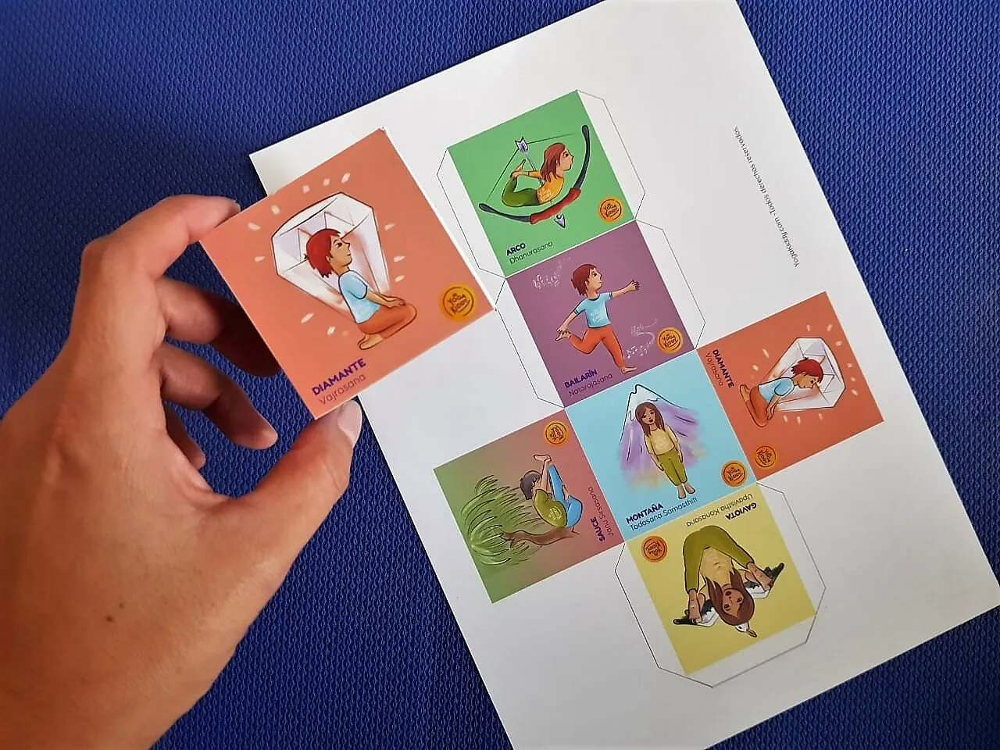

Hola,
Seguramente ustedes deben conocer este entretenido juego.
Es una de las actividades que proponemos en nuestra formación de Yoga Infantil y que hemos compartido con nuestras alumnas, pero hoy quiero ofrecerles un nuevo DADO 🎲 completamente GRATIS, para que puedan disfrutar de esta actividad junto a sus niños y niñas.
Esta hermosa herramienta te permitirá crear divertidas actividades y al mismo tiempo introducir a tus niños en el Yoga, aprendiendo de manera divertida algunas posturas y sus respectivos nombres.
¿Tienes alguna amiga o amigo a quien pueda interesarle? No dudes en enviarle el enlace directo a nuestro sitio para que pueda descargarlo!
¡Espero que lo disfruten!
Un abrazo,
Carmen 🌻